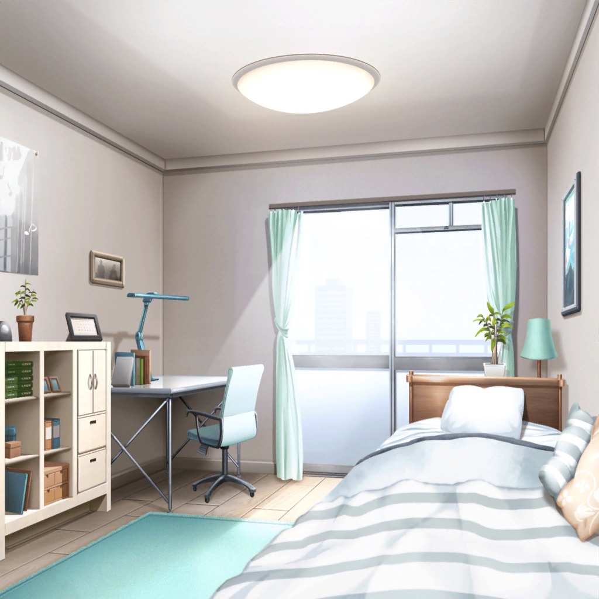

氷川家 紗夜の部屋
日菜
おねーちゃん、いるー？
紗夜
日菜……
部屋に入るときはノックして、って
いつも言ってるでしょう？
日菜
えへへ、ごめんなさーい。
あれ？ おねーちゃん何してるの？
紗夜
調湿剤を取り換えていたのよ
紗夜
エレキギターにとって、過度な湿気や乾燥は大敵。
だから調湿剤を入れて、ケースの湿度を管理する必要があるの
日菜
あ！ それ、この前、麻弥ちゃんに話を聞いて
楽器屋さんに買いに行ったんだけど、
どれかわからなかったんだ！
紗夜
わからないはずないと思うけれど……
ちゃんと見たのかしら？
日菜
う、うん！
ちゃんと見たけど、見つからなかったんだよ～。
いいなぁ……あたしも調湿剤ほしいなぁ～
紗夜
そうね、早く手に入れたほうがいいわね。
楽器屋さんに売っているから、
早めに買っておきなさい
日菜
そ、そうじゃなくって……
おねーちゃん、一緒に探してくれない？
紗夜
どうして私が一緒に？
１人で買いに行けばいいじゃない。
よく探せばちゃんと見つかるはずよ
日菜
そ、それに……っ！
どの調湿剤がいいか、あたしよくわからないから、
おねーちゃんのオススメとか、教えてよ！
日菜
ね？
ギターのためにも、お願いー！
紗夜
……はあ、わかったわ。
確かにギターが傷んでしまってからでは遅いわね
日菜
本当！？
わーい！！
紗夜
楽器屋に行くくらいで大げさね……
日菜
あたしにとっては、一大イベントなの！
日菜
ふーん、ふふ～ん♪ おねーちゃんとお出かけ、嬉しいな～！
紗夜
ほら、早く行くわよ？
行かないのなら、別にいいけれど……
日菜
わ～！
行く行く！！

江戸川楽器店
日菜
よーし！
すっごくいい調湿剤を探すぞー！
紗夜
すっごくいい調湿剤は……高いわよ
日菜
じゃ、じゃあほどほどにいい調湿剤を探すぞー！
紗夜
探すも何も、日菜の目の前にあるじゃない。
ほら、コレが調湿剤。レジに持って行ったら？
日菜
えぇ！？
もう見つけちゃったの！？
ちょっと早すぎるよー
紗夜
早く見つかって良かったじゃない……
あなた、調湿剤を買いに来たんでしょう？
日菜
そうなんだけど〜！
あ、じゃあおねーちゃん！
これとこれ、どっちがいいと思う？
紗夜
どっちもそれほど変わらないと思うわ。
日菜が気に入った方を買ったらどう？
日菜
で、でも！
おねーちゃんの意見も聞きたいというか……
紗夜
……それじゃあ、こっちかしらね。
私も、同じのを使っているし
日菜
……！！
わかった！ じゃあ絶対こっちにするね！
わ～、やったー！ おねーちゃんとお揃いだ♪
紗夜
もう……
仕方ないわね……ふふ……
日菜
な、なに？
どうしたの、おねーちゃん？
紗夜
……何でもないわ。
どうせなら調湿剤以外も、何か見ていきましょうか？
せっかく楽器屋に来たんだし
日菜
い、いいの！？
本当に！？
紗夜
ええ、今日は特に予定もないし。
日菜、何か見たいものはある？
日菜
じゃあじゃあ！
ずっと、おねーちゃんと一緒に見たかった
ギターがあっちにあるの！
日菜
ほら、早く行こうよ！
紗夜
わかったから、お店の中は走っちゃダメよ
紗夜の部屋-昼
紗夜
あとは、その調湿剤をケースに入れるだけよ。
ほら、ケースを貸して？
日菜
あ！ そ、それは自分でやるよ！
中に入れるだけだし、大丈夫！
紗夜
どうしたの、日菜？ 急に遠慮して
日菜
い、いや、だってー……
そこまでおねーちゃんにやってもらうのも悪いし！
紗夜
そう？ まあ、そこまで言うならいいけど。
それじゃあ、はい、これ。ケースに入れるだけで平気よ
日菜
はーい！ ありがとー♪
日菜
（本当は昨日、調湿剤買って入れておいたけど、
おねーちゃんとお揃いのやつにしちゃおーっと）
紗夜
……ん？ 何かあったかしら？
日菜
ううん！ 別になんでもないよ！
紗夜
……日菜ってホント、おかしな子ね